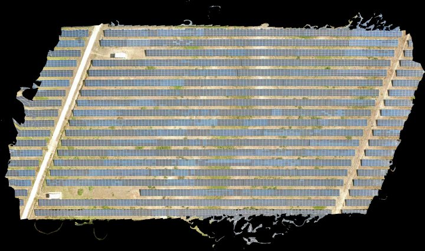
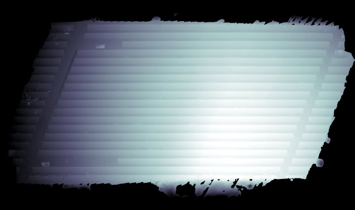
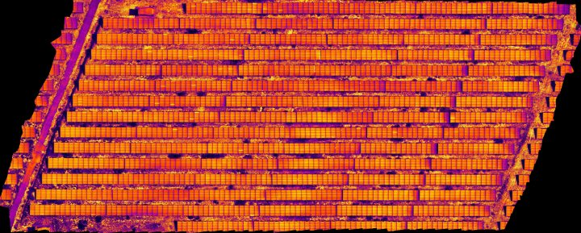
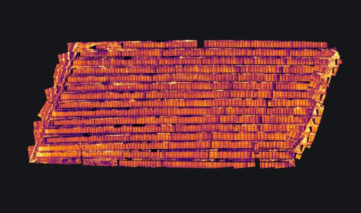
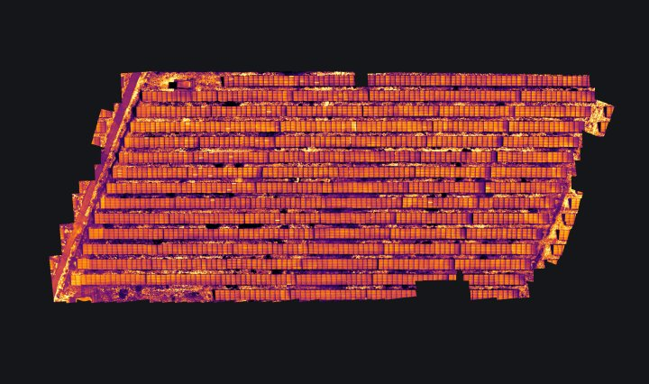

Ortho MÀU (Metashape)XONG
Nền màu của cả dự án. Mã tấm pin, polygon 6473 tấm, toạ độ lỗi đều tính trên lưới này.
nền chuẩn — mọi thứ khác khớp về đây
du_lieu/Thermal2_31M_full_export/ortho.tif
25354 × 14993 · 1.2 GB · sinh bởi export tay từ Metashape

DSM (Metashape)XONG
Mặt cao độ để bắn tia từ ảnh nhiệt xuống mặt đất. Không có nó thì không quy được pixel ảnh lẻ ra toạ độ.
—
du_lieu/Thermal2_31M_full_export/dsm.tif
12677 × 7497 · 296.0 MB · sinh bởi export tay từ Metashape

Ortho nhiệt (Metashape)KHÔNG DÙNG
KHÔNG dùng: nằm trên lưới toạ độ khác ortho màu (8600×3448, bước 2,405e-07 độ), chồng lên là phải nắn lại. Giữ để đối chứng.
lưới khác hẳn
du_lieu/Thermal2_31M_full_export/thermal_ortho.tif
8600 × 3448 · 122.5 MB · sinh bởi export tay từ Metashape
Ortho nhiệt tự ghépXONG
Bản gốc: đưa từng ảnh nhiệt qua H sang khung RGB rồi dán lên lưới gấp 3 lần ortho màu. Đầu vào cho hai bản nắn bên dưới.
lệch trung vị 7,92 cm · RMSE 8,30 cm
ket_qua/ortho/ortho_nhiet_tu_lam.tif
8451 × 4997 · 15.3 MB · sinh bởi ma/ghep_ortho_nhiet.py
Ortho nhiệt nắn theo RGBXONG
Nắn TOÀN CỤC một phép cho cả tấm ortho. Đỡ hơn bản gốc nhưng không chữa được lệch riêng của từng ảnh — nên mới có bản bù dưới đây.
bản trung gian
ket_qua/ortho/ortho_nhiet_nan.tif
8451 × 4997 · 16.1 MB · sinh bởi ma/nan_ortho_theo_rgb.py

Ortho nhiệt dán xuôiKHÔNG DÙNG
Dán thẳng không nắn, làm ra để so cho thấy khác biệt. Đừng lấy ảnh minh hoạ so_dan_xuoi.jpg làm bằng chứng — script vẽ nó tra DSM sai chỉ số (cột nhận giá trị hàng).
đối chứng
ket_qua/ortho/ortho_nhiet_dan_xuoi.tif
8451 × 4997 · 16.7 MB · sinh bởi ma/ghep_ortho_dan_xuoi.py

Ortho nhiệt bù theo RGBXONGđang dùng
BẢN ĐANG DÙNG. Cân sáng rồi bù lệch RIÊNG cho từng ảnh trước khi dán. Đây là lớp nhiệt trong cả hai giao diện gán nhãn.
lệch trung vị 1,50 cm · RMSE 2,79 cm
ket_qua/ortho/ortho_nhiet_bu_rgb.tif
8451 × 4997 · 15.3 MB · sinh bởi bu_theo_rgb.py → ghep_ortho_nhiet.py --bu-rgb
Đánh giá model bằng nhãn tayXONG
Precision 0,865 · Recall 0,968 · F1 0,914 · đúng lớp 0,972. Mốc là 511 tấm người soi chốt tay, đơn vị chấm là tấm pin. Recall đo bằng quét tay toàn bản đồ nên là số đếm hết, không phải ước lượng. Bảng đầy đủ trong tai_lieu/DANH_GIA_THEO_NHAN.ipynb, chạy lại bằng ma/danh_gia_model_theo_nhan.py.
Ba nhà máy mới của KhánhĐANG LÀM
BIM 2 · Thuận Nam 19 · Thuận Nam Đức Long — dữ liệu còn đang tải trong Data_Khánh_làm/, chưa chạy pipeline lần nào.
Nhiệt độ thật từ ảnh 16-bitCHƯA LÀM
Ảnh nhiệt có dữ liệu 16-bit nằm trong khối APP3 mà pipeline đang bỏ phí — chỉ đọc ảnh 8-bit đã tô màu. Mở ra thì tính được ΔT thật của từng vệt nóng, lọc lỗi theo chênh nhiệt chứ không chỉ theo hình dạng.
Hai bản ghép còn dang dởCHƯA LÀM
ghep_ortho_pha_tron.py và ghep_ortho_off_nadir.py có script nhưng chưa dựng ra file .tif nào.